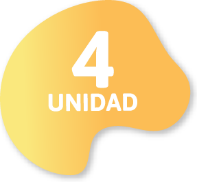
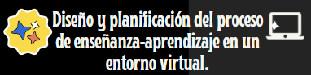

Diseño y planificación del proceso de enseñanza-aprendizaje en un entorno virtual.
|  |  |
|
RESULTADO DE APRENDIZAJE DE LA UNIDAD Valora la gestión escolar desde el punto de vista de la diversidad y asume los desafíos a los que se enfrenta la educación actual, manteniendo una mentalidad abierta
|